Места для размещения и отдыха
Гостевые дома
Достопримечательности Роминтской пущи
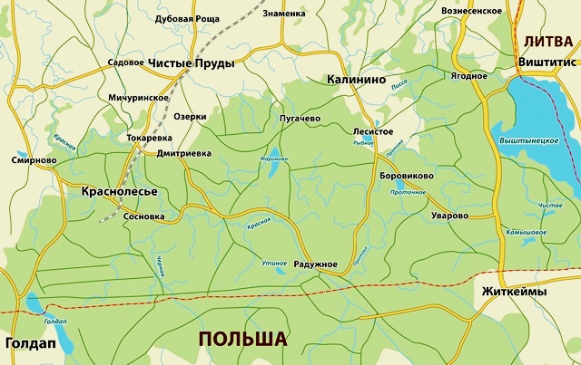
Посёлок Краснолесье
«Усадьба Титова»
Гостеприимный дом (примерно в 1 км от музея)
Дом расположен на окраине посёлка у опушки леса. Имеются 6 двухместных номеров. Имеется баня. Предлагается сплав на байдарках по реке Красной. Организуется посещение музея.
«У Валентины»
Уютный старый дом немецкой постройки с гостевыми комнатами для двух-трёх человек. Туалет, душ, кухня. Возможность приобретения домашней продукции. На приусадебном участке есть уютное место для пикника.
«У Степана»
Уютный дом в уединённом месте посёлка Краснолесье. Две комнаты по два спальных места. Туалет, душ. В вашем распоряжении благоустроенная кухня.
Окрестные посёлки
«Лесная поляна»
Сельская усадьба (5 км от Краснолесья)
Усадьба расположена на окраине леса. Имеются 4 двухместных номера. Очень вкусная домашняя кухня из фермерских продуктов. Бревенчатая баня. Организуется посещение музея, зимние прогулки по лесу на лыжах и снегоступах.
Эл. почта: rominta_1@mail.ru
Сайт: www.rominta.ru
У Людмилы Петренко
Вам предлагается разместиться в доме на колёсах на территории хозяйства Людмилы Петренко, окружённой лесом. В вагончике две двухспальных кровати. Имеется кухонка с газовой плитой, холодильником и посудой. Подведено электричество. Предоставляется постельное бельё. Туалет расположен на улице.
Эл. почта: 1164ludmila@mail.ru
«Усадьба Заеца»
Сельская усадьба (7 км от Краснолесья)
Росположен в историческом здании одного из четырёх бывших лесничеств Роминтской пущи. Имеются 8 двухместных номеров. Очень вкусная домашняя кухня из собственных фермерских продуктов. Организуются прогулки по лесу и посещение музея. Байдарки.
«Олень»
Гостеприимный дом (7,5 км от Краснолесья)
В гостевом доме имеется 4 номера: три двухместных номера и один четырёхместный. Гостевой дом представляет старое двухэтажное немецкое здание из красного кирпича, расположенное пососедству с мемориальным музеем литовско поэта Кристионаса Донелайтиса.
Гостям предоставляется возможность охоты и рыбалки, посещения оленьей фермы.
«Виштынец»
Гостевой дом (около 20 км от Краснолесья)
Гостевой дом расположен на берегу озера Виштынецкое. К услугам гостей уютная сауна с джакузи, просторная кухня, каминный зал. Предоставляется прокат велосипедов. На сайте гостевого дома можно получить информацию об услугах, которые предоставляются гостям.
Сайт: www.vishtynez.ru
«Жемчужина»
Областной центр детского и молодёжного отдыха (около 20 км от Краснолесья)
Расположен на берегу Вштынецкого озера. Прекрасная возможность для многодневного пребывания детских групп и не только. В летнее время организуются детские смены до 70 человек, а также тематические смены кратковременного пребывания. Имеется пляж, пирс, спортплощадка. Комнаты трёх, четырёх и пятиместные, душ и туалет на этаже. Во время смены организуется питание.
Информация о центре на сайте Агентства по делам молодёжи Правительства Калининградской области: переход на страницу сайта.
Работа центра в 2014 году:
Будем рады вашим предложениям: тел.: +7-906-2126823, Алексей Соколов, эл. почта: wystynez@bk.ru.
Фотографии из исходной страницы
Фотографии сохранены в исходной последовательности. В архивном HTML отдельные снимки не подписаны, поэтому я не приписываю их конкретным гостевым домам без проверки.
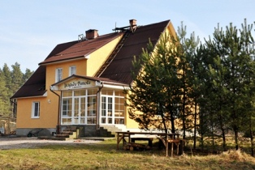
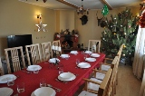
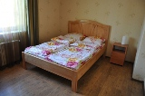
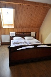
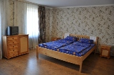
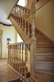
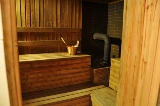
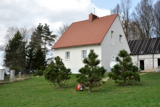
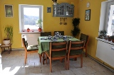
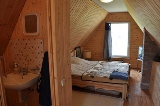
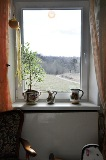
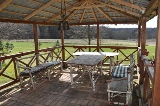
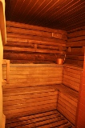
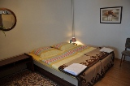
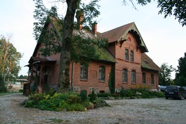
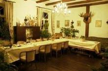
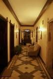
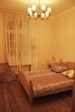
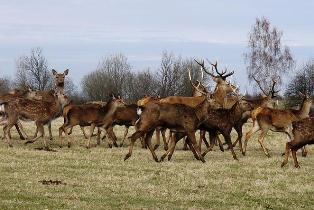
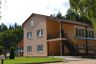
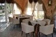
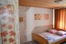
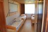
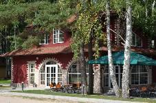
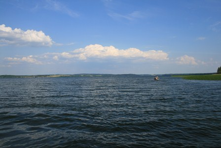
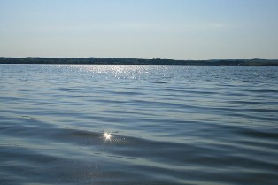
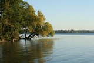